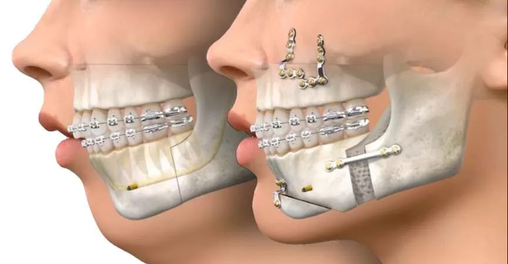

A cirurgia ortognática é um procedimento que corrige deformidades dentofaciais
graves envolvendo os ossos da maxila, mandibula mento.
Diferente do tratamento ortodôntico converncional, que movimenta apenas os dentes, a cirurgia atua diretamente na estrutura óssea.

. Discrepância esquelética Classe || ou ||| severa
. Mordida aberta esquelética
. Assimetria facial impotante
. Apneia obstrutiva do sono de causa esquelética
. Desproporção facial que afeta estética e função
80% dos casos têm motivação funcional + estética.
A mastigação,fala e respiração melhoram junto com a harmonia facial.
1. Teste do esplho:Paciente projeta a mandibula pra frente pra "encaixar" os
dentes = Classe ||| esquelética
2. Perfil facial:Ângulo nasolabial >110°ou <85°, mento muito pra frente ou pra trás
3. Limitação funcional:Dificuldade pra cortar alimentos, falar certos fonemas, ou respirar pelo nariz